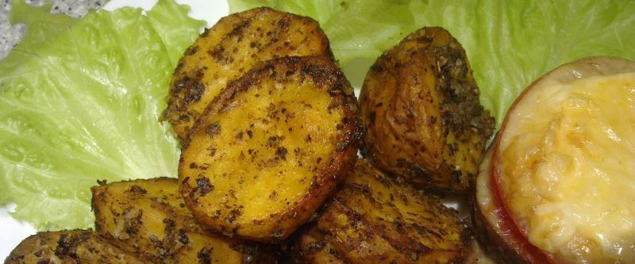

Картошка по-деревенски

Помыть нечищенную картошку. Разрезать на четвертинки и варить почти до готовности, слить воду.
Разогреть сковороду с достаточным количеством подсолнечного масла. Выложить картофель на сковороду, посыпать приправой для картофеля. Обжаривать на давольно сильном огне, постоянно помешивая, до готовности и появления румяной корочки.